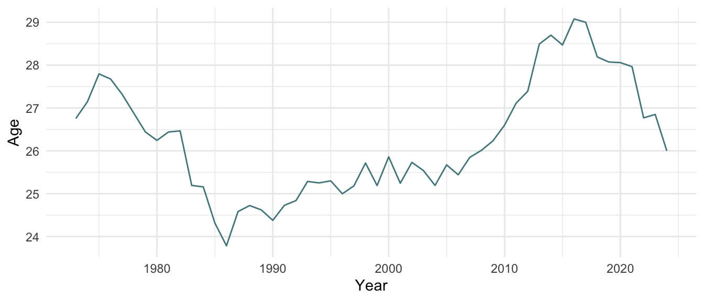

Rank | Name | Birth Year | Country | Total Points | Victory Points | Bonus Points | Victories | Defeats | Win Percent |
|---|---|---|---|---|---|---|---|---|---|
16 | Ken Rosewall | 1934 | Australia | 3,498 | 2,688 | 810 | 92 | 19 | 82.88% |
183 | Mal Anderson | 1935 | Australia | 162 | 102 | 60 | 13 | 9 | 59.09% |
102 | Roy Emerson | 1936 | Australia | 593 | 553 | 40 | 32 | 12 | 72.73% |
66 | Andres Gimeno | 1937 | Spain | 1,062 | 832 | 230 | 35 | 14 | 71.43% |
27 | Rod Laver | 1938 | Australia | 2,698 | 2,128 | 570 | 60 | 10 | 85.71% |
106 | Nikola Pilic | 1939 | Croatia | 560 | 490 | 70 | 39 | 21 | 65.00% |
152 | Earl Butch Buchholz | 1940 | United States | 290 | 260 | 30 | 13 | 5 | 72.22% |
116 | Roger Taylor | 1941 | United Kingdom | 458 | 358 | 100 | 37 | 27 | 57.81% |
111 | Dennis Ralston | 1942 | United States | 514 | 454 | 60 | 29 | 14 | 67.44% |
23 | Arthur Ashe | 1943 | United States | 3,100 | 2,480 | 620 | 106 | 28 | 79.10% |
17 | John Newcombe | 1944 | Australia | 3,337 | 2,547 | 790 | 93 | 21 | 81.58% |
34 | Tony Roche | 1945 | Australia | 2,080 | 1,710 | 370 | 68 | 24 | 73.91% |
33 | Ilie Nastase | 1946 | Romania | 2,194 | 1,724 | 470 | 98 | 41 | 70.50% |
109 | Onny Parun | 1947 | New Zealand | 555 | 455 | 100 | 51 | 38 | 57.30% |
225 | Ian Fletcher | 1948 | Australia | 65 | 65 | 0 | 14 | 13 | 51.85% |
69 | Manuel Orantes | 1949 | Spain | 1,016 | 756 | 260 | 66 | 26 | 71.74% |
82 | Adriano Panatta | 1950 | Italy | 858 | 668 | 190 | 62 | 30 | 67.39% |
35 | Roscoe Tanner | 1951 | United States | 1,952 | 1,622 | 330 | 90 | 33 | 73.17% |
5 | Jimmy Connors | 1952 | United States | 7,804 | 6,004 | 1,800 | 233 | 49 | 82.62% |
94 | Raul Ramirez | 1953 | Mexico | 711 | 561 | 150 | 60 | 31 | 65.93% |
50 | Vitas Gerulaitis | 1954 | United States | 1,456 | 1,056 | 400 | 85 | 37 | 69.67% |
182 | Victor Pecci | 1955 | Paraguay | 169 | 79 | 90 | 30 | 27 | 52.63% |
9 | Bjorn Borg | 1956 | Sweden | 6,388 | 4,918 | 1,470 | 141 | 16 | 89.81% |
356 | Markus Gunthardt | 1957 | Switzerland | -1 | -1 | 0 | 0 | 1 | 0.00% |
62 | Johan Kriek | 1958 | United States | 1,102 | 752 | 350 | 81 | 34 | 70.43% |
10 | John McEnroe | 1959 | United States | 5,309 | 4,059 | 1,250 | 167 | 38 | 81.46% |
4 | Ivan Lendl | 1960 | United States | 7,954 | 6,164 | 1,790 | 222 | 49 | 81.92% |
233 | Ramesh Krishnan | 1961 | India | 58 | 28 | 30 | 41 | 39 | 51.25% |
258 | Wayne Hearn | 1962 | United States | 32 | 32 | 0 | 1 | 1 | 50.00% |
90 | Henri Leconte | 1963 | France | 745 | 545 | 200 | 78 | 44 | 63.93% |
13 | Mats Wilander | 1964 | Sweden | 4,845 | 3,755 | 1,090 | 144 | 37 | 79.56% |
51 | Pat Cash | 1965 | Australia | 1,437 | 1,117 | 320 | 68 | 33 | 67.33% |
12 | Stefan Edberg | 1966 | Sweden | 5,037 | 3,827 | 1,210 | 178 | 47 | 79.11% |
11 | Boris Becker | 1967 | Germany | 5,057 | 3,927 | 1,130 | 163 | 40 | 80.30% |
46 | Michael Stich | 1968 | Germany | 1,591 | 1,241 | 350 | 78 | 31 | 71.56% |
65 | Cedric Pioline | 1969 | France | 1,070 | 850 | 220 | 76 | 47 | 61.79% |
7 | Andre Agassi | 1970 | United States | 6,828 | 5,178 | 1,650 | 224 | 53 | 80.87% |
6 | Pete Sampras | 1971 | United States | 7,490 | 5,640 | 1,850 | 203 | 38 | 84.23% |
41 | Michael Chang | 1972 | United States | 1,817 | 1,367 | 450 | 120 | 56 | 68.18% |
138 | Hicham Arazi | 1973 | Morocco | 347 | 307 | 40 | 46 | 35 | 56.79% |
36 | Yevgeny Kafelnikov | 1974 | Russia | 1,943 | 1,523 | 420 | 99 | 36 | 73.33% |
105 | Marcelo Rios | 1975 | Chile | 574 | 464 | 110 | 51 | 26 | 66.23% |
58 | Gustavo Kuerten | 1976 | Brazil | 1,182 | 832 | 350 | 65 | 30 | 68.42% |
137 | Nicolas Kiefer | 1977 | Germany | 349 | 279 | 70 | 60 | 44 | 57.69% |
67 | Tommy Haas | 1978 | Germany | 1,041 | 881 | 160 | 105 | 59 | 64.02% |
178 | James Blake | 1979 | United States | 184 | 154 | 30 | 60 | 42 | 58.82% |
31 | Marat Safin | 1980 | Russia | 2,337 | 1,907 | 430 | 95 | 38 | 71.43% |
2 | Roger Federer | 1981 | Switzerland | 14,744 | 11,514 | 3,230 | 369 | 60 | 86.01% |
26 | Andy Roddick | 1982 | United States | 2,906 | 2,326 | 580 | 131 | 45 | 74.43% |
56 | Fernando Verdasco | 1983 | Spain | 1,280 | 1,220 | 60 | 113 | 71 | 61.41% |
71 | Robin Soderling | 1984 | Sweden | 984 | 824 | 160 | 51 | 31 | 62.20% |
15 | Stan Wawrinka | 1985 | Switzerland | 3,570 | 2,970 | 600 | 160 | 74 | 68.38% |
3 | Rafael Nadal | 1986 | Spain | 13,014 | 10,004 | 3,010 | 314 | 44 | 87.71% |
1 | Novak Djokovic | 1987 | Serbia | 17,314 | 13,454 | 3,860 | 409 | 57 | 87.77% |
25 | Marin Cilic | 1988 | Croatia | 2,939 | 2,549 | 390 | 143 | 63 | 69.42% |
38 | Kei Nishikori | 1989 | Japan | 1,866 | 1,656 | 210 | 104 | 46 | 69.33% |
48 | Milos Raonic | 1990 | Canada | 1,579 | 1,389 | 190 | 92 | 37 | 71.32% |
85 | Grigor Dimitrov | 1991 | Bulgaria | 805 | 665 | 140 | 103 | 61 | 62.80% |
140 | Marton Fucsovics | 1992 | Hungary | 333 | 323 | 10 | 35 | 36 | 49.30% |
37 | Dominic Thiem | 1993 | Austria | 1,883 | 1,523 | 360 | 75 | 36 | 67.57% |
393 | Andrew Harris | 1994 | Australia | -4 | -4 | 0 | 0 | 1 | 0.00% |
70 | Nick Kyrgios | 1995 | Australia | 992 | 902 | 90 | 54 | 32 | 62.79% |
32 | Daniil Medvedev | 1996 | Russia | 2,261 | 1,751 | 510 | 94 | 36 | 72.31% |
24 | Alexander Zverev | 1997 | Germany | 2,979 | 2,369 | 610 | 131 | 40 | 76.61% |
77 | Stefanos Tsitsipas | 1998 | Greece | 931 | 671 | 260 | 70 | 36 | 66.04% |
95 | Alex De Minaur | 1999 | Australia | 695 | 625 | 70 | 69 | 35 | 66.35% |
133 | Felix Auger Aliassime | 2000 | Canada | 385 | 285 | 100 | 48 | 29 | 62.34% |
22 | Jannik Sinner | 2001 | Italy | 3,174 | 2,484 | 690 | 98 | 22 | 81.67% |
108 | Lorenzo Musetti | 2002 | Italy | 559 | 479 | 80 | 36 | 20 | 64.29% |
14 | Carlos Alcaraz | 2003 | Spain | 4,014 | 3,154 | 860 | 91 | 13 | 87.50% |
267 | Arthur Fils | 2004 | France | 24 | 24 | 0 | 11 | 9 | 55.00% |
171 | Jakub Mensik | 2005 | Czechia | 223 | 193 | 30 | 20 | 10 | 66.67% |
191 | Joao Fonseca | 2006 | Brazil | 137 | 127 | 10 | 12 | 7 | 63.16% |
773 | Federico Cina | 2007 | Italy | -41 | -41 | 0 | 1 | 1 | 50.00% |
283 | Moise Kouame | 2009 | France | 17 | 17 | 0 | 2 | 1 | 66.67% |
Age
This page ranks the top tennis player born in each year. It also displays the average age of each tennis player in the ATP top 100.
